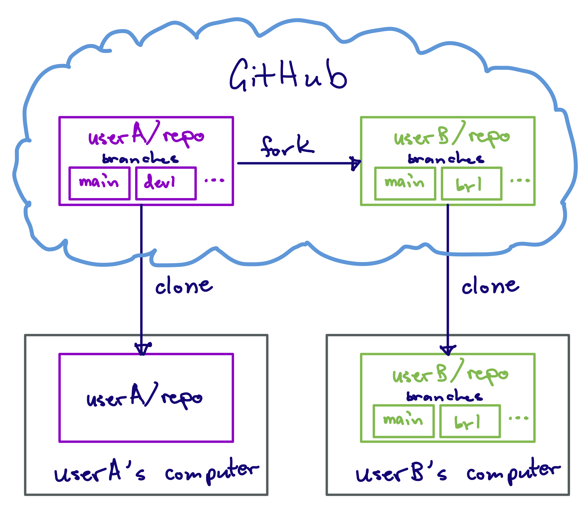

print("Hello world!")Hello world!We will use GitHub Classroom for doing assignments, and for keeping track of the tutorials you do in class. In order to use GitHub Classroom you need to know how to use Git and GitHub. Understanding Git/GitHub are also key for your future career, as they have become the primary tools for version control and for collaborating on development in both industry and academia.
In this tutorial we will cover the basics of doing commits and pushing to/pulling from GitHub using the command line interface (CLI). It is also possible to do these things using a visual interface in VS Code, or using GitHub Desktop. However, the CLI is the most powerful means to manage a Git repository, and (once you know how to use it) I have found it to be more straight forward than VS Code’s implementation. Learning how to use the CLI will also pay dividends down the road, as you become a more experienced developer.
In this tutorial we will not cover more advanced topics such as branches and forks. I have put together a more extensive set of tutorials on using branches and forks for collaborative software development here:
We will cover branches later in the semester, time permitting.
In order to use Git on your computer you first need to configure it.
You’ll need to tell git what your name and email are, so that it creates commits with the appropriate author information. You only need to do this once, the very first time you use git on your computer.
To do that, open a terminal (either use your OS’s native terminal, or open VS Code then click Terminal -> New Terminal). Now run the following (it doesn’t matter which directory you run these from), but replacing YOUR NAME with your name and YOUR_EMAIL_ADDRESS with your email address:
git config --global user.name "YOUR NAME"
git config --global user.email "YOUR_EMAIL_ADDRESS"Sometimes it happens that you want to enter long commit messages (more on that below). To do that, you’ll need to tell git what text editor to use. By default git will use vim, which can be tricky to understand for new users. For the purposes of this tutorial, we’ll use the more user-friendly nano. To do that, run the following in your terminal:
git config --global core.editor nanoIf you wish to reset to the default editor after the tutorial is over, run:
git config --global --unset-all core.editorBefore diving into using git, it’s necessary to understand the difference between Git and GitHub.
Git is a program that you run on a computer to track changes to your files and enable collaboration. It is a type of version control software. Git was created by Linus Torvalds (the guy who invented Linux) in 2005 for Linux kernel development.
Files are tracked in a repository. A repository is just a folder on your computer that you’ve told Git to track.
GitHub is a cloud platform for hosting Git repositories and collaborating on code development. It is owned by Microsoft. You can interact with GitHub through their website at github.com. Basically, GitHub is a collection of remote computers owned by Microsoft that have a bunch of Git repositories on them. GitHub uses Git to manage repositories.
Once you create an account with GitHub, you are able to create remote repositories on their servers. You can then copy, or clone those remote repositories to your local computer. On your local computer, you use Git to make modifications to the repository, then push those changes back to the copy at GitHub in order to keep them in sync.
Here is a diagram illustrating the relationship (this diagram also includes a fork, which is your copy of someone else’s repository, both of which live on GitHub):

To start, we will clone your classroom notebook from GitHub. You should have a link to the classroom notebook in Blackboard. When you click on it, you will be prompted to link a GitHub account. Select your name to do so. Once you do, GitHub will create a repository for you. This repository will be your classroom notebook. As we continue through the rest of the semester, you will commit and push tutorials and scripts that you create in class to this repository. You will have separate, similar repositories for each homework assignment.
To clone the repository we will use VS Code. There is a way to do this using the CLI, but this is one instance where using VS Code is a bit easier as VS Code will take care of authentication for you.
To clone the repo using VS Code:
Use your web browser to navigate to your classroom notebook repository on GitHub.
Click the green “Code” button in the upper left. That will open a drop-down menu. Make sure the HTTPS tab is selected, then copy the URL that’s listed there (you can just click the copy icon to the right to copy the URL).
Open VS Code.
In VS Code, open the command palette by hitting Ctrl/Command + Shift + P on the keyboard. In the command palette prompt at the top, type gitcl, then select “Git: Clone” from the drop-down menu.
gitcl, and select “Git: Clone”.Paste the URL you copied from GitHub into the command palette then hit Enter.
You will be prompted where to store the repository. Select the ist356 directory we created last week. Then click the “Select as Repository Destination” button.
You will be asked whether to open or open in a new window. To make sure we’re not mixing up projects, select “Open in a New Window”. This will open a new VS Code Window with the contents on the cloned repository.
Note that you now have a folder in your ist356 directory called class-notebook. The class-notebook folder is your local copy of the class-notebook repository. It is a folder like any folder on your computer, except that it has been marked by Git to track changes that are made within it. This is what makes it a repository.
At this point, the repository just has a README.md file. We will create files and folders in this repository as we go forward.
You can view the status of the repository using the command line. Open a terminal (click Terminal -> New Terminal). You should be in your class-notebook folder (run pwd to check). If not, cd into class-notebook. Now type:
git statusYou will get back a message indicating that everything is up to date.
Let’s create a simple Python file to illustrate how to use Git to track files.
Create a new file by clicking “File -> New File…”. Enter hello.py into the prompt then hit Enter. This will open the save file window. Make sure to select your class-notebook folder. Then click “Create File.”
In the file, type:
Then hit Ctrl/Cmd + S to save the changes. You’ve written a simple Python program in your class-notebook repository.
If you haven’t already, open a terminal (click Terminal -> New Terminal). You should be in your class-notebook folder (run pwd to check). If not, cd into class-notebook.
Test that your simple Python program works by running:
python hello.pyYou should get back “Hello world!” in the terminal.
You’ve now made a change in the repo, but you haven’t tracked it yet. You can see that by typing git status. You’ll get a message showing that you have untracked files in the repository.
Let’s create a snapshot of our change by committing hello.py to the repository. You first need to stage the file for committing. To do that, type:
git add hello.pyType git status. You’ll see that hello.py is now in green, indicating that it is staged for a commit. This does not mean we’ve committed the file yet. To actually commit the change, type:
git commit -m "add hello.py"Congratulations! You’ve made your first commit to your repository. To see that, type git status. You should now see that there are no changes to be made.
You can see the history of commits by typing:
git logThis will open a scrollable log showing all the commits that have been made to the repository. You can move up and down using the arrows. To exit the log, hit q. (Note: if the history is short enough that it will fit entirely in the terminal the entire history will just be printed out to the terminal. In that case, you do not have to hit q.)
Your changes have only been made to your local repository. That have not been synced back to the remote on GitHub. To see that, go back to your web browser and refresh GitHub. You will not see hello.py in the repository.
To sync your local changes back to GitHub, you need to push the changes. To do that, in your terminal, type:
git pushYou should see a message indicating that the changes have been made to your remote.
To verify that the changes have been made, refresh the page on GitHub. You should now see hello.py listed there. You can also see your history of commits using the GitHub interface.
Let’s make a change on the remote repository and see how to sync back to your local clone.
In your web browser, click on “hello.py”.
You can edit “hello.py” in the web browser by clicking the button with a pen on it.
Add the following on a new line:
Commit the change using the web interface. GitHub will generate a commit message automatically for you.
The changes you made on your remote repository are not automatically communicated to your local repository. You can verify that by either looking at hello.py in VS code, or by typing git log in your terminal. You’ll see that your latest commit is not there.
To pull down the changes from the remote repo, in your terminal type:
git pullYou will see a message indicating that your repo has been updated. To verify that, type git log. You should see your latest commit there. If you look at hello.py in VS Code you should also see that it has been updated.
It’s good practice to always run git pull before running git push to ensure your local copy is up to date before pushing changes. If your local copy does not have changes that were made to the remote, you will not be able to push them (git will raise an error).
This illustrates the basic steps you need to take to modify a repository and communicate it back to GitHub:
Stage the files you want to commit by typing:
git add FILENAMEHere, FILENAME is the name of the file you want to stage. You can stage multiple files at once by listing them (putting a space between each file name).
Commit the changes to the file by typing:
git commit -m "MY COMMIT MESSAGE"Here, MY COMMIT MESSAGE is the log you want for the commit. Be brief but descriptive!
When you are done making changes to your local repository and want to sync them back to GitHub, type:
git pushIf you get an error saying that you can't push due to your local not being up to date with the remote, run `git pull` first.